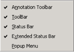
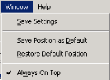
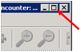
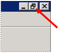
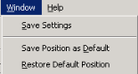

Use display features on the View and Window menus as needed.
|
To |
Do this |
|---|---|
|
Control the toolbar, status bar, and Popup Menu display features |
Use commands on the View menu. (See “View menu” earlier in this guide for full details.)
 |
|
Keep the viewer window displayed in front of other windows |
Select Always On Top from the Window menu. (See “Windows menu” earlier in this guide for full details.)
 |
|
Display the window at full screen size
|
Use the standard Windows Maximize button.
 |
|
Return the window to its last size and position
|
Use the standard Windows Restore button.
 |
|
Return the window to its default size and position |
Select Restore Default Position from the Window menu.
 |